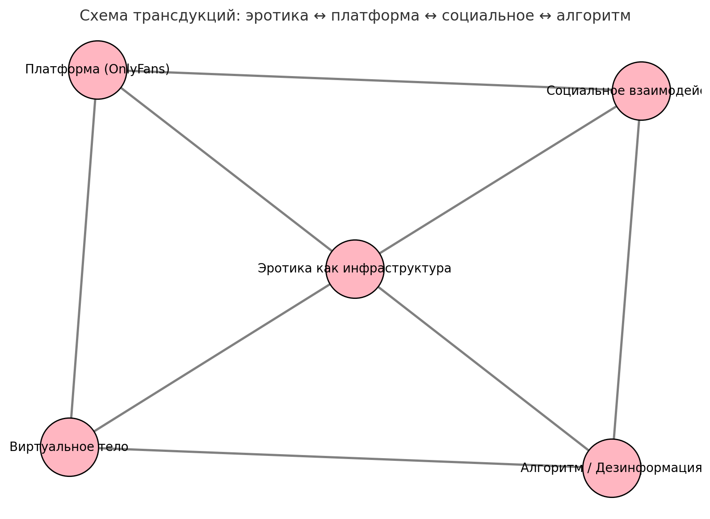

Введение / Manifesto 💗
В эпоху платформ доверие стало управляемой инфраструктурой. Эротика встраивается в эту логику: обещание «реального тела» монетизируется как доступ к интимности. Decoy Girls меняет оптику: мы рассматриваем эротическое как технику рассеивания субъективности. Персонажи‑аватары работают как декои - они не подтверждают «подлинность», а делают видимой саму работу сигналов, фильтров и алгоритмов доверия. Режим интимной беседы (чат‑боты, приватные диалоги) производит эффект близости без гарантии истины; именно это и становится полем художественного исследования.
Decoy Girls — эксперимент с персонажами, чатами и «интимными технологиями». Мы не романтизируем OnlyFans как освобождение; напротив, вскрываем биополитические риски и милитаризацию «girling» как weaponization.
Research Notes 🫧

Доверие как инфраструктура. Дезинформация сегодня - это настройка оптики доверия: шум, перегрузка, когнитивные сбои. Интимность в цифре воспроизводит эту логику: эффект близости создаётся алгоритмами лестности и подстройки.
Girlification и алгоритмы. «Девушка» - инженерия внимания: фильтры, интерфейсы, ритуалы удержания. Она становится узлом в петле алгоритмов, где «подлинность» - режим рендеринга доверия.
Интимные технологии. Чат‑боты и приватные диалоги производят распределённую интимность - между скриптами, платформами и воображением.
Characters / Decoy Types 👧
Ультра‑гладкая. Идеальное Instagram‑тело; гладкость как маска алгоритма.
Gothic. Глитч и призрак; цифровая девушка как spectral‑фигура.
Angel/Mystic. Тело‑медиум; обещание трансценденции как код.
NPC/Decoy. Открытая искусственность; пустота как защита и укрытие.
Fieldwork / Archive 🗂️
Исследовательский атлас: публичные скриншоты интерфейсов, визуальные стили, рекламные стратегии, заметки о видимости/цензуре. Позднее - полевые дневники, карты взаимодействий и фрагменты переписок (обезличенно).
Lab / Methods 🧪
Перформанс + ресёрч + архивация. Генеративные тексты/изображения, ведение аккаунтов как перформативных интерфейсов, переписки как полевые интервью, фиксация сбоев и реакций.
Модули. Тон, визуальные паттерны, тактики доверия, дистрибуция, контр‑модуль (noise‑вставки, прозрачность алгоритма через наложение схем/кода).
Этика. Работа ведётся аватарами, все взаимодействия обезличиваются; учитываются риски ghost‑work, неравный доступ к телесным технологиям и цифровой безопасности.
Credits / Reading 📚

- Jussi Parikka — Insect Media
- Caroline Bassett & Luciana Parisi — Thinking with the Female Drone
- Bogna Konior — AI Erotics
- Alex Quicho — Girlstack
Инициаторы проекта: GIRLSTACK LAB 💗